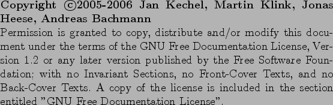

Nächste Seite:
Inhalt
Inhalt
Index
TeamFound
Infrastrukturen zur Open Source Softwareentwicklung
Technische Universität Berlin
A. Bachmann, J. Heese, J. Kechel, M. Klink
WS 2005/2006

Inhalt
Abbildungsverzeichnis
Einleitung
Infrastrukturen zur Open Source Softwareentwicklung
TeamFound
Komponenten
Funktionsumfang
Suchanfragen
Kategorien
Teamfound-Server
Vorüberlegungen
Anforderungen
Plattform
Bibliotheken
Apache Lucene
Allgemein
Wichtige Komponenten
HSQLDB
Weitere Bibliotheken
Architektur
Servlet
Controller
Indexer
Response
Datenmodell
Datenbank
Index und Dokumentstruktur
Repräsentation der Kategorien
Abläufe im Server
AddpageRequest
SearchRequest
GetCategoriesRequest
Mögliche Verbesserungen im derzeitigen Server
Probleme
Protokoll
Designentscheidungen und verwendete Techniken
Interface Milestone 1
Seite hinzufügen
Suchen
Interface Milestone 2
HTML-Antwort
XML-Antwort
Clients
Web-Client
Implementation
Firefox-Toolbar
Dateien
Implementation
Internet Explorer-Toolbar
Custom Explorer Bars, Tool Bands, and Desk Bands
Entwicklung der Band Objekte
COM, Schnittstellen, Klassen, Registry
Band Objekte und COM
Registrierung der Band Objekte
Die BandObject Library
Installation
Entwicklung
Fazit Internetexplorer Erweiterung
Projektorganisation
Kommunikation
Source-Code Verwaltung
Teilprojekte
Meilensteine
Meilenstein 1
Meilenstein 2
Meilenstein 3
Ideen für zukünftige Versionen
Fazit & Ausblick
Interface
Interface Milestone 2
Allgemein
Tests
Alle Anfragen an den Server
HTML-Antwort
XML-Antwort
Seite hinzufügen
Anfrage an Server
XML Antwort
HTML Antwort
Suchen
Anfrage an Server
XML Antwort
HTML Antwort
Kategorien von Server abfragen
Anfrage an Server
XML Antwort
HTML Antwort
Kategorie hinzufügen
Anfrage an Server
XML Antwort
HTML Antwort
Alle Projekte auslesen
Anfrage an Server
XML Antwort
HTML Anwort
Löschen einer Kategorie
Logbuch
Projekt Logbuch
2006
April 2006
März 2006
Januar 2006
2005
Dezember 2005
November 2005
Firefox Toolbar Changelog
2006
2005
Firefox & Flock toolbar 0.7 (07-DEC-2005)
Firefox toolbar 0.6 (30-NOV-2005)
Firefox toolbar 0.5 (28-NOV-2005)
Firefox toolbar 0.4 (27-NOV-2005)
Firefox toolbar 0.3 (24-NOV-2005)
Firefox toolbar 0.2 (22-NOV-2005)
Firefox toolbar 0.1 (19-NOV-2005)
TeamFound Programm Lizenz
GNU Free Documentation License
Literatur
Index
Über dieses Dokument ...
Jan Kechel 2006-04-28